本章导语
消化管从口腔到直肠，管壁大多由黏膜、黏膜下层、肌层和外膜四层构成，各段的功能差异体现在这四层的改变上。本章沿食物路径观察硬腭、舌、食管、胃、小肠、大肠和直肠，重点是食管与胃、胃与十二指肠等交界处的上皮移行，以及胃腺、小肠绒毛与肠腺、结肠带等特征结构。每张切片都先定层次，再逐层描述。
复习重点
- 掌握消化管管壁四层的一般结构。
- 掌握胃黏膜与胃底腺各型细胞的结构和功能。
- 掌握小肠绒毛、小肠腺以及十二指肠、空肠、回肠的差别。
- 能识别食管胃交界、胃十二指肠交界等上皮移行部位。
- 比较大肠、阑尾与直肠的结构特点。
易混淆对比
- 小肠绒毛 vs 大肠腺：绒毛为黏膜表面的指状突起，大肠腺为陷入固有层的管状腺
- 胃小凹 vs 胃腺：胃小凹位于黏膜表面为上皮凹陷，胃腺位于固有层内
- 十二指肠 vs 空肠：十二指肠黏膜下层有十二指肠腺，空肠无
阅读提示：本页中文要点为自编复习笔记，不是原站正文的翻译；标本图像为经作者书面许可保存的中分辨率概览，每张卡片保留 © 署名与原页面链接，“原站本章/原站切片”可查看高倍与结构标注。本站为 Histology Guide 的非官方中文学习改编版，未经其认可或背书。
硬腭
Hard Palate
- 表面为角化的复层扁平上皮，固有层结缔组织致密。
- 黏膜下层含腭腺，多为黏液性腺体，导管开口于表面。
- 硬腭黏膜借黏膜下层与骨膜紧密相连，活动度小。
- 口腔黏膜缺少黏膜肌层，与消化管其余部位不同。
低倍镜低倍镜下先确认角化复层扁平上皮与深部骨组织
高倍镜高倍镜下观察上皮角化程度与黏膜下层腺体形态
易混提示：硬腭黏膜下层较薄，腺体易被误认作固有层内的结构。
相关标本 · 1
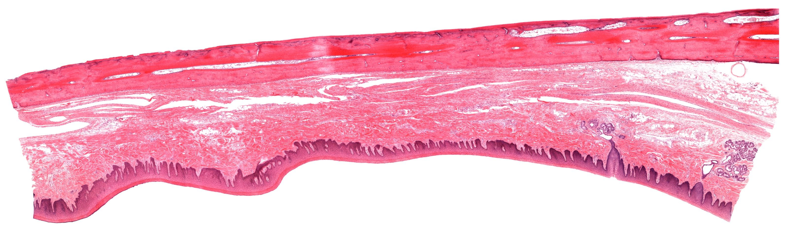
点击图片放大 · 本地概览
MHS 246 Hard Palate
硬腭
H&E
本地概览
3211×927
图像 © Histology Guide 及/或原始贡献者 · 非商业教育用途，经许可保存；原页面链接见下方
舌的结构
Tongue
- 舌由黏膜与舌肌构成，舌肌为骨骼肌，纤维方向纵横交错。
- 舌背黏膜的舌乳头分丝状、菌状、轮廓和叶状四类。
- 丝状乳头数量最多，上皮角化但不含味蕾，参与形成舌苔。
- 菌状乳头与轮廓乳头含味蕾，被覆上皮不角化。
- 味蕾由味细胞、支持细胞和基细胞组成，顶端有味孔。
低倍镜低倍镜下先区分舌背黏膜与深部纵横交错的骨骼肌
高倍镜高倍镜下按乳头形态和有无味蕾区分四类舌乳头
易混提示：轮廓乳头切面可呈环形皱褶，易被误认为腺体或溃疡。
相关标本 · 5
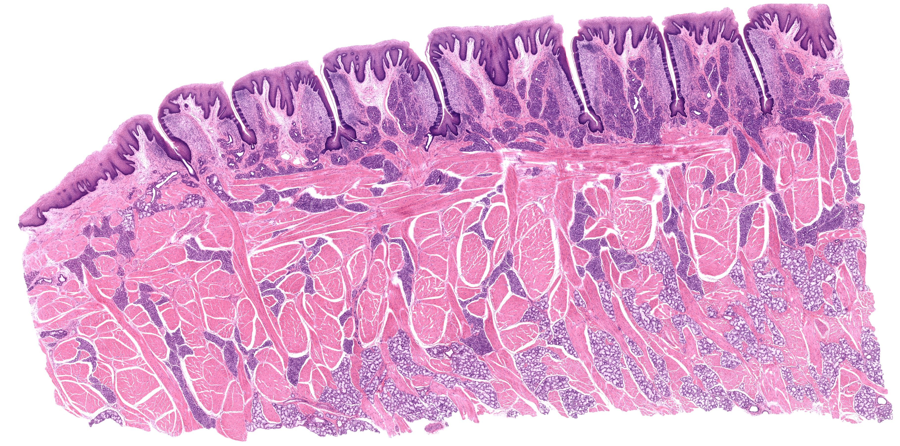
点击图片放大 · 本地概览
MH 108 Tongue
舌（丝状乳头）
Foliate Papillae and Taste Buds
H&E
本地概览
3637×1806
图像 © Histology Guide 及/或原始贡献者 · 非商业教育用途，经许可保存；原页面链接见下方
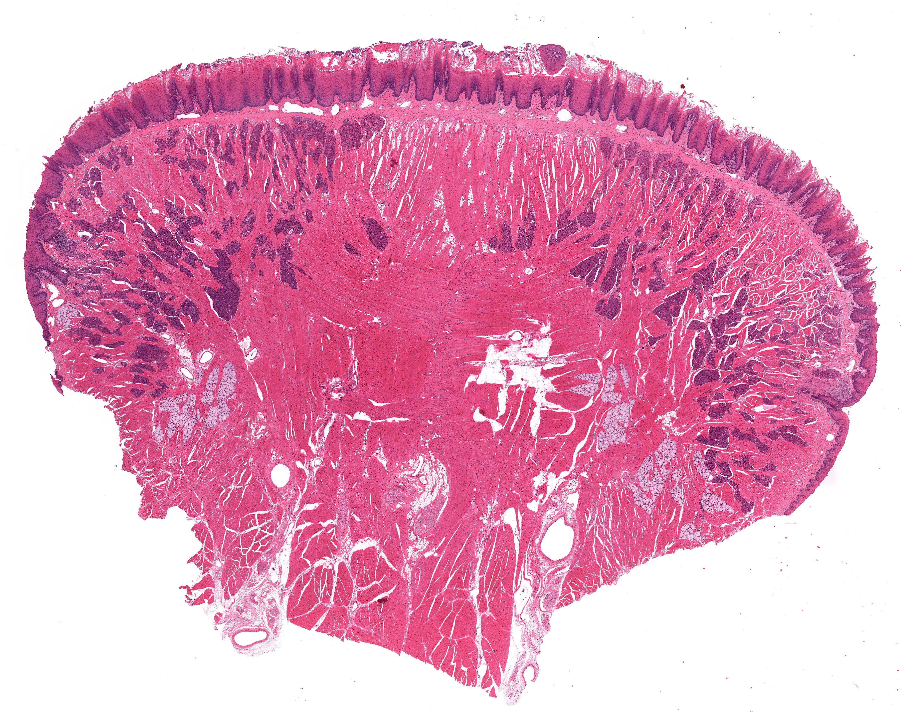
点击图片放大 · 本地概览
MHS 208 Tongue
舌（菌状乳头）
Filiform Papillae
H&E
本地概览
4500×3557
图像 © Histology Guide 及/或原始贡献者 · 非商业教育用途，经许可保存；原页面链接见下方
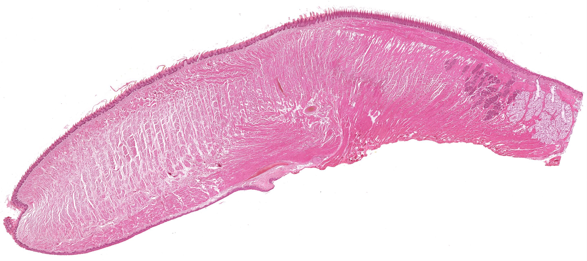
点击图片放大 · 本地概览
MHS 201 Tongue
舌（轮廓乳头）
Filiform Papillae
H&E
本地概览
2880×1284
图像 © Histology Guide 及/或原始贡献者 · 非商业教育用途，经许可保存；原页面链接见下方
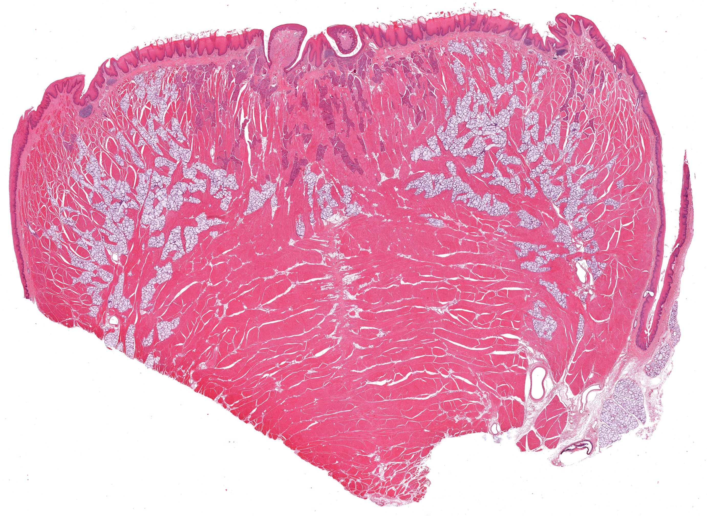
点击图片放大 · 本地概览
MHS 264 Tongue
舌（味蕾）
Circumvallate Papillae
H&E
本地概览
2762×2018
图像 © Histology Guide 及/或原始贡献者 · 非商业教育用途，经许可保存；原页面链接见下方
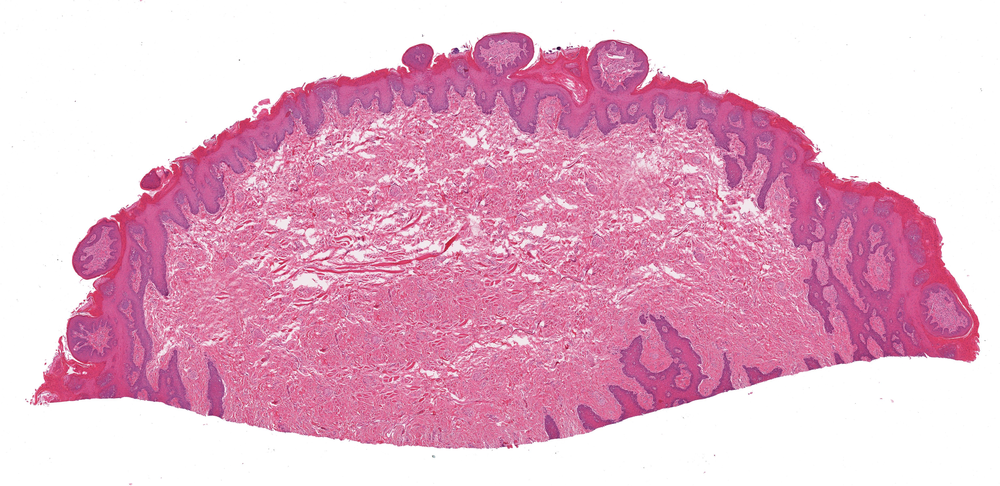
点击图片放大 · 本地概览
MHS 266 Tongue
舌（舌肌）
Fungiform Papillae
H&E
本地概览
4937×2402
图像 © Histology Guide 及/或原始贡献者 · 非商业教育用途，经许可保存；原页面链接见下方
食管
Esophagus
- 黏膜为未角化的复层扁平上皮，固有层内可见淋巴小结。
- 黏膜下层含食管腺，为黏液性腺，导管开口于表面。
- 肌层上段为骨骼肌，中段骨骼肌与平滑肌混合，下段为平滑肌。
- 外膜为纤维膜，由结缔组织构成，无间皮覆盖。
低倍镜低倍镜下先确认管腔面、黏膜下层腺体以及肌层的两层
高倍镜高倍镜下比较上段骨骼肌与下段平滑肌的形态差异
易混提示：食管上段肌层为骨骼肌，不要因位置在消化管就一律判为平滑肌。
相关标本 · 2
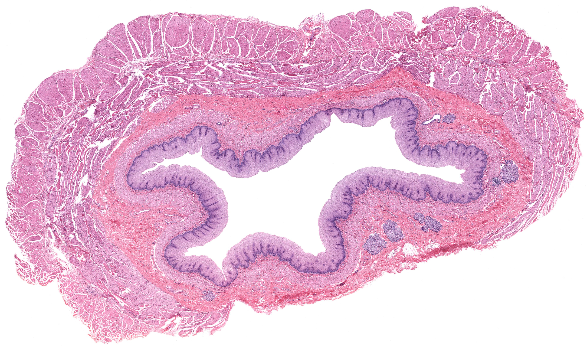
点击图片放大 · 本地概览
MH 109 Esophagus
食管
Middle Third
H&E
本地概览
3701×2182
图像 © Histology Guide 及/或原始贡献者 · 非商业教育用途，经许可保存；原页面链接见下方
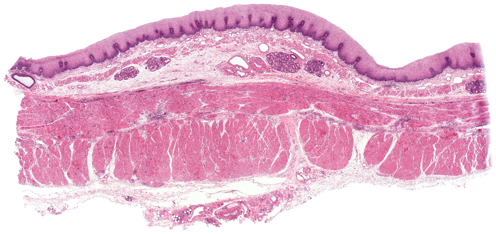
点击图片放大 · 本地概览
MHS 234 Esophagus
食管（MHS 234）
Lower Third
H&E
本地概览
2643×1250
图像 © Histology Guide 及/或原始贡献者 · 非商业教育用途，经许可保存；原页面链接见下方
食管胃交界
Gastroesophageal Junction
- 复层扁平上皮与单层柱状上皮在此突然移行。
- 交界处黏膜下层含贲门腺，分泌黏液以保护局部黏膜。
- 该处黏膜屏障较弱，是反流性食管炎和肿瘤的好发部位。
低倍镜低倍镜下先找到上皮由多层变单层的移行线
高倍镜高倍镜下确认移行处上皮形态的骤然改变及贲门腺
易混提示：移行区上皮可呈过渡形态，须以整体层次变化判断而非单个细胞。
相关标本 · 1
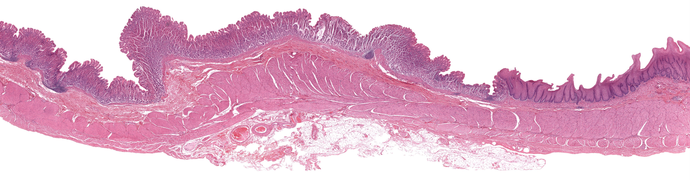
点击图片放大 · 本地概览
MH 111a Gastroesophageal Junction
食管胃交界
H&E
本地概览
4995×1312
图像 © Histology Guide 及/或原始贡献者 · 非商业教育用途，经许可保存；原页面链接见下方
胃壁
Stomach
- 黏膜表面有许多胃小凹，固有层内充满密集排列的胃腺。
- 胃底腺由主细胞、壁细胞、颈黏液细胞和内分泌细胞组成。
- 主细胞分泌胃蛋白酶原，壁细胞分泌盐酸和内因子。
- 肌层较厚，由内斜、中环、外纵三层平滑肌构成。
- 外膜为浆膜，表面覆间皮，与腹腔其他器官表面一致。
低倍镜低倍镜下先确认胃小凹、黏膜下层和三层肌层
高倍镜高倍镜下区分主细胞的嗜碱性基底部与壁细胞的嗜酸性胞质
易混提示：切片斜切时胃小凹可呈腺管状，容易与其下方的胃腺混淆。
相关标本 · 8
MH 111a Stomach Wall
胃壁（全层）
H&E
本地概览
4995×1312
图像 © Histology Guide 及/或原始贡献者 · 非商业教育用途，经许可保存；原页面链接见下方
MH 111a Cardiac Stomach
贲门部胃
H&E
本地概览
4995×1312
图像 © Histology Guide 及/或原始贡献者 · 非商业教育用途，经许可保存；原页面链接见下方
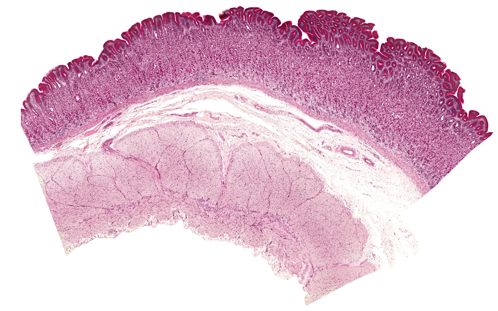
点击图片放大 · 本地概览
MHS 247 Fundic Stomach
胃底（MHS 247）
Periodic Acid-Schiff’s/H&E
本地概览
5084×3183
图像 © Histology Guide 及/或原始贡献者 · 非商业教育用途，经许可保存；原页面链接见下方
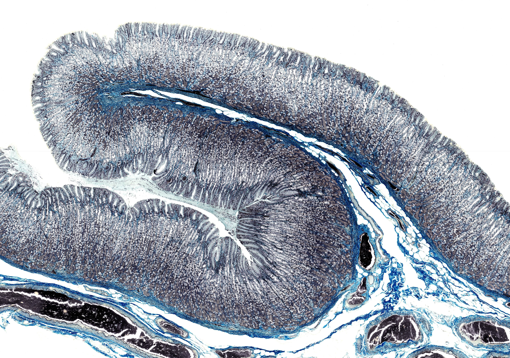
点击图片放大 · 本地概览
UCSF 234 Fundic Stomach
胃底（UCSF 234）
Iron Hematoxylin & Aniline Blue (IHAB)
本地概览
4245×2988
图像 © Histology Guide 及/或原始贡献者 · 非商业教育用途，经许可保存；原页面链接见下方
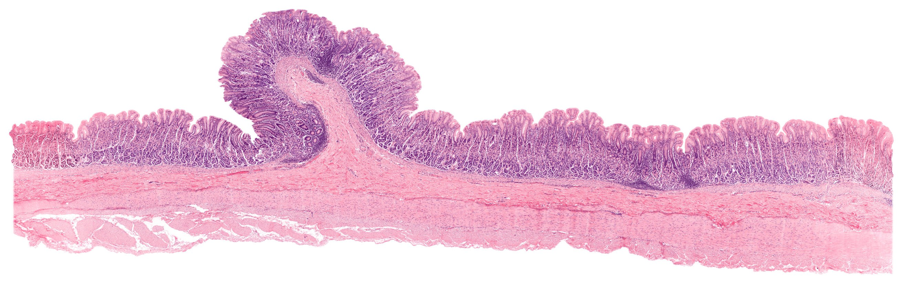
点击图片放大 · 本地概览
MH 112 Fundic Stomach
胃底（胃底腺）
H&E
本地概览
2619×825
图像 © Histology Guide 及/或原始贡献者 · 非商业教育用途，经许可保存；原页面链接见下方
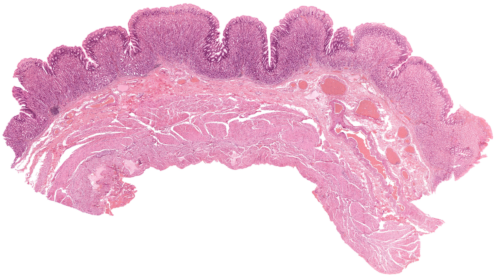
点击图片放大 · 本地概览
MH 113 Fundic Stomach
胃底（壁细胞）
H&E
本地概览
3100×1746
图像 © Histology Guide 及/或原始贡献者 · 非商业教育用途，经许可保存；原页面链接见下方
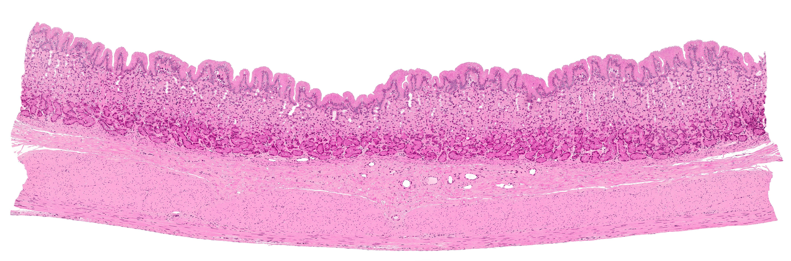
点击图片放大 · 本地概览
MHS 251 Fundic Stomach
胃底（MHS 251）
Thin Section
H&E
本地概览
4300×1422
图像 © Histology Guide 及/或原始贡献者 · 非商业教育用途，经许可保存；原页面链接见下方
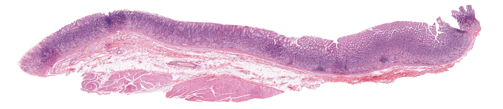
点击图片放大 · 本地概览
MH 115 Pyloric Stomach
幽门部胃
H&E
本地概览
4425×965
图像 © Histology Guide 及/或原始贡献者 · 非商业教育用途，经许可保存；原页面链接见下方
胃黏膜血管
Vasculature of the Gastric Mucosa
- 黏膜下层动脉丛发出分支进入黏膜，在腺体间形成毛细血管网。
- 胃小凹周围毛细血管丰富，与活跃的分泌活动相适应。
- 黏膜内存在动静脉吻合，参与局部血流调节。
低倍镜低倍镜下沿黏膜下层寻找水平走行的血管断面
高倍镜高倍镜下确认黏膜内毛细血管与腺体的毗邻关系
易混提示：胃黏膜腺体间隙狭窄，毛细血管常被挤压而不易辨认。
相关标本 · 1
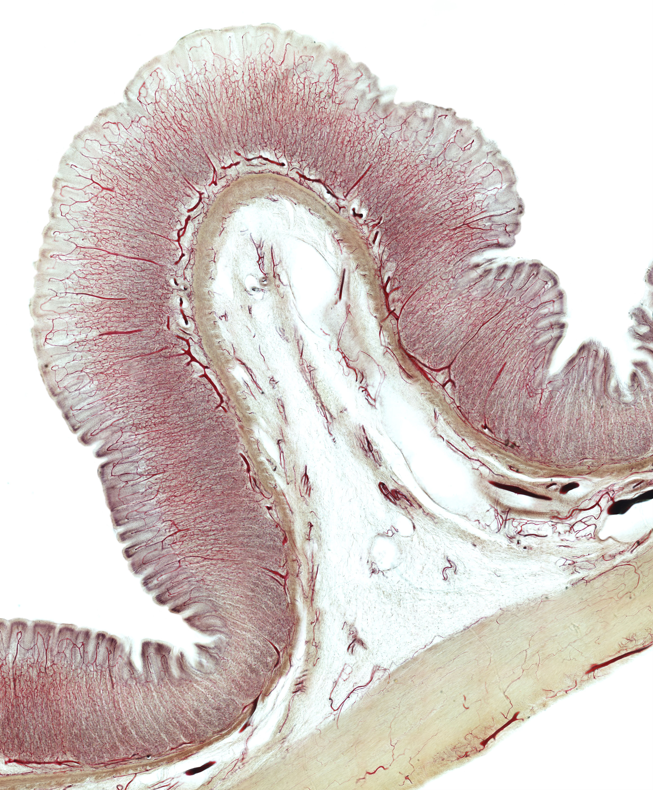
点击图片放大 · 本地概览
MHS 292 Fundic Stomach
胃底（MHS 292）
Dye Injection
本地概览
4636×5608
图像 © Histology Guide 及/或原始贡献者 · 非商业教育用途，经许可保存；原页面链接见下方
胃十二指肠交界
Gastroduodenal Junction
- 幽门处环形肌明显增厚，形成环绕管腔的幽门括约肌。
- 胃腺在此过渡为幽门腺，黏膜上皮由胃上皮转为小肠上皮。
- 交界处黏膜下层开始出现十二指肠腺，属黏液性腺体。
低倍镜低倍镜下先找到增厚的环形肌与黏膜上皮的改变
高倍镜高倍镜下比较幽门腺与十二指肠腺的位置和形态
易混提示：幽门括约肌切面可呈分离的肌束，需结合位置确认其连续性。
相关标本 · 2
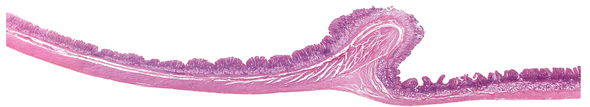
点击图片放大 · 本地概览
MH 116 Gastroduodenal Junction
胃十二指肠交界
H&E
本地概览
4996×916
图像 © Histology Guide 及/或原始贡献者 · 非商业教育用途，经许可保存；原页面链接见下方
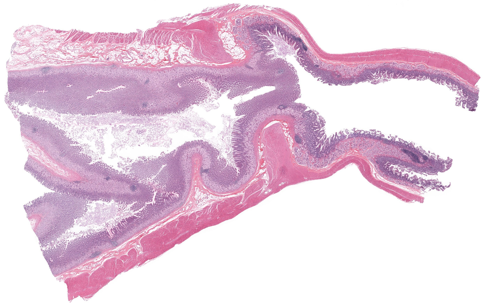
点击图片放大 · 本地概览
MHS 225 Gastroduodenal Junction
胃十二指肠交界（MHS 225）
H&E
本地概览
2790×1773
图像 © Histology Guide 及/或原始贡献者 · 非商业教育用途，经许可保存；原页面链接见下方
小肠
Small Intestine
- 黏膜形成环状襞、绒毛和小肠腺三级结构，显著扩大吸收面积。
- 绒毛表面为单层柱状上皮，含吸收细胞和杯状细胞。
- 绒毛中轴为固有层，内含中央乳糜管和毛细血管。
- 十二指肠黏膜下层含十二指肠腺，回肠固有层含集合淋巴小结。
- 肌层为内环、外纵两层平滑肌，外膜多为浆膜。
低倍镜低倍镜下先看绒毛形态、环状襞和肠壁四层结构
高倍镜高倍镜下辨认绒毛上皮的吸收细胞、杯状细胞与中央乳糜管
易混提示：十二指肠与空肠绒毛形态相近，区分主要依据有无十二指肠腺。
相关标本 · 7
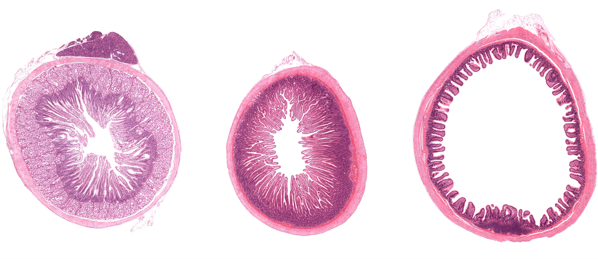
点击图片放大 · 本地概览
MH 118 Small Intestine
小肠（H&E）
Ileum, Jejunum, and Duodenum
H&E
本地概览
4886×2120
图像 © Histology Guide 及/或原始贡献者 · 非商业教育用途，经许可保存；原页面链接见下方
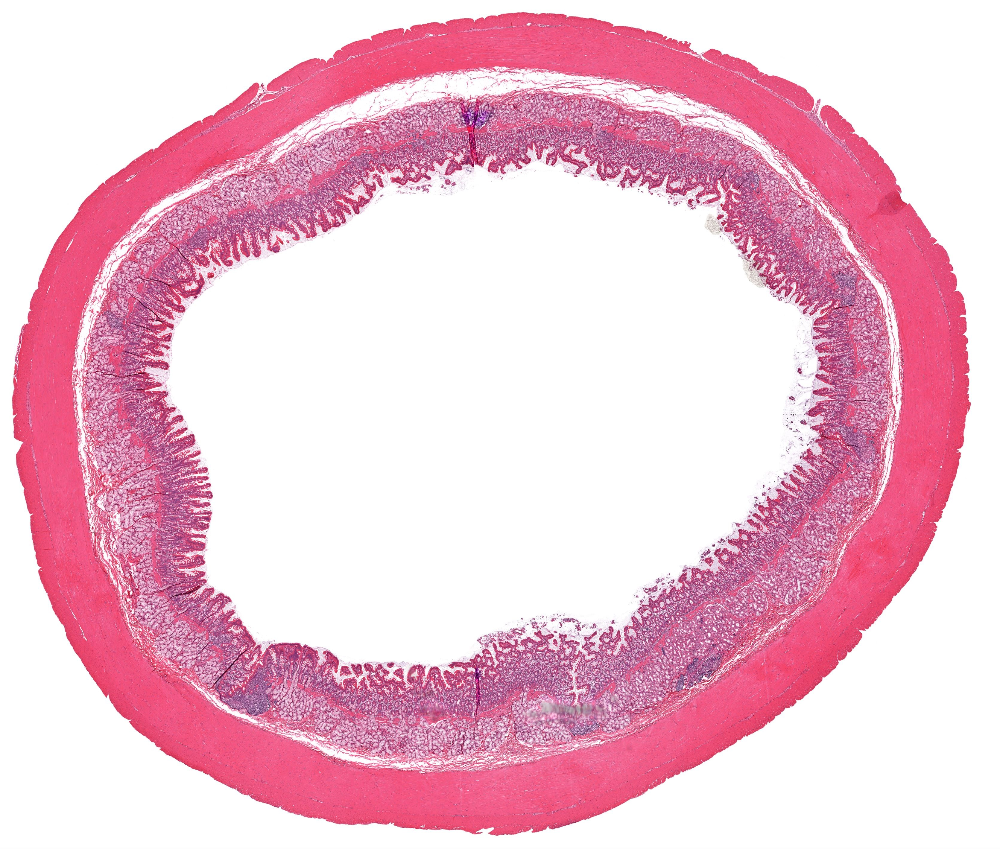
点击图片放大 · 本地概览
MHS 272 Duodenum
十二指肠
H&E
本地概览
3342×2838
图像 © Histology Guide 及/或原始贡献者 · 非商业教育用途，经许可保存；原页面链接见下方
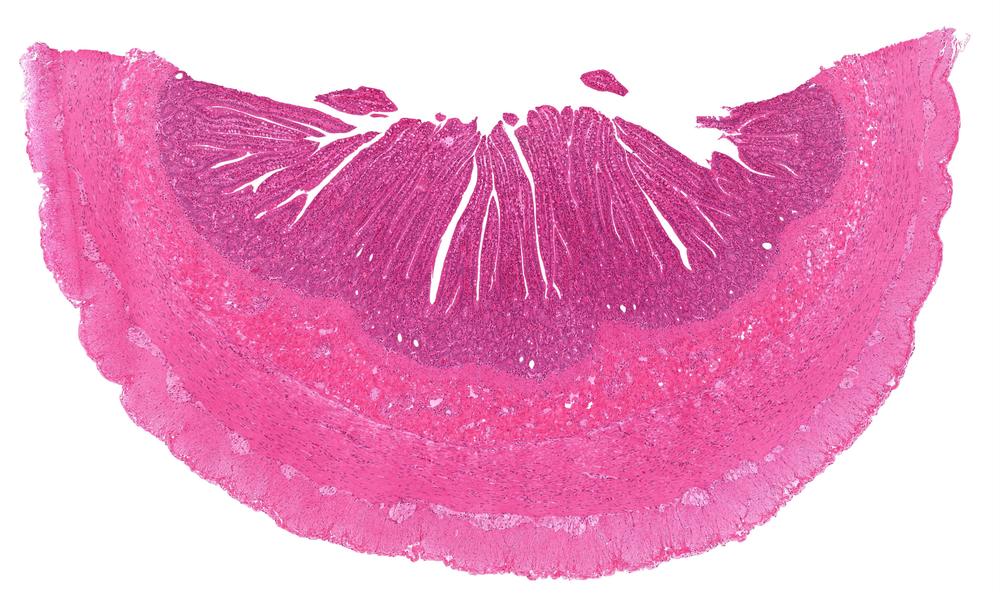
点击图片放大 · 本地概览
MHS 219 Jejunum
空肠
H&E
本地概览
4197×2500
图像 © Histology Guide 及/或原始贡献者 · 非商业教育用途，经许可保存；原页面链接见下方
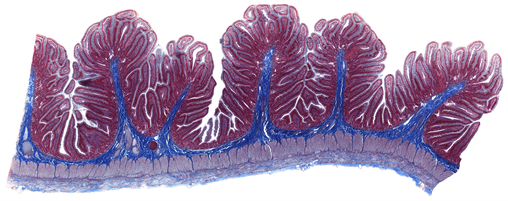
点击图片放大 · 本地概览
MHS 248 Jejunum
空肠（MHS 248）
Masson's Trichrome
本地概览
3707×1468
图像 © Histology Guide 及/或原始贡献者 · 非商业教育用途，经许可保存；原页面链接见下方
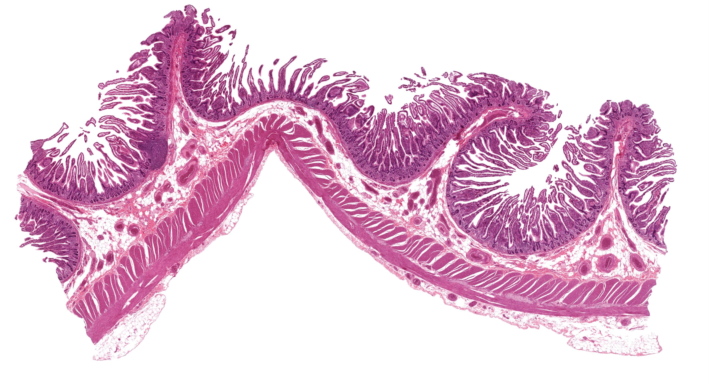
点击图片放大 · 本地概览
MH 119 Ileum
回肠
H&E
本地概览
3516×1912
图像 © Histology Guide 及/或原始贡献者 · 非商业教育用途，经许可保存；原页面链接见下方
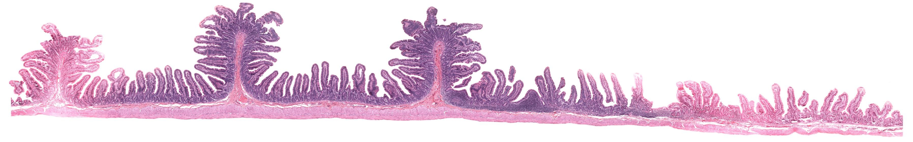
点击图片放大 · 本地概览
MH 120 Ileum
回肠（集合淋巴小结）
H&E
本地概览
3593×562
图像 © Histology Guide 及/或原始贡献者 · 非商业教育用途，经许可保存；原页面链接见下方
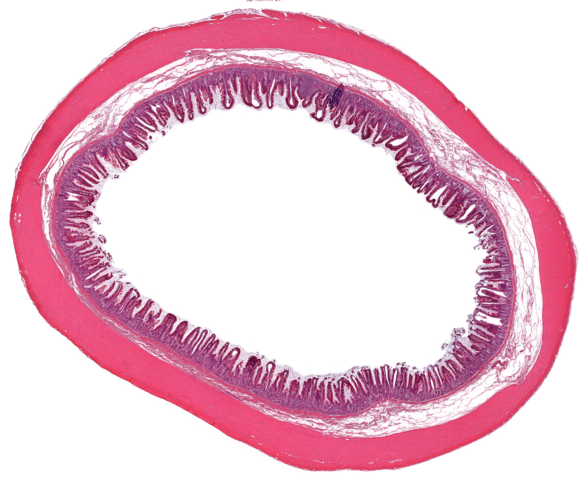
点击图片放大 · 本地概览
MHS 273 Ileum
回肠（MHS 273）
H&E
本地概览
5103×4169
图像 © Histology Guide 及/或原始贡献者 · 非商业教育用途，经许可保存；原页面链接见下方
小肠血管
Vasculature of the Small Intestine
- 绒毛内的中央乳糜管是毛细淋巴管，负责吸收脂肪。
- 绒毛内毛细血管网吸收氨基酸、葡萄糖等水溶性营养物质。
- 黏膜下血管丛发出分支进入绒毛，形成动静脉网。
低倍镜低倍镜下在绒毛中轴寻找管腔较大的中央乳糜管
高倍镜高倍镜下区分中央乳糜管与紧邻的毛细血管
易混提示：中央乳糜管管壁极薄，制片中常塌陷，易被忽略。
相关标本 · 1
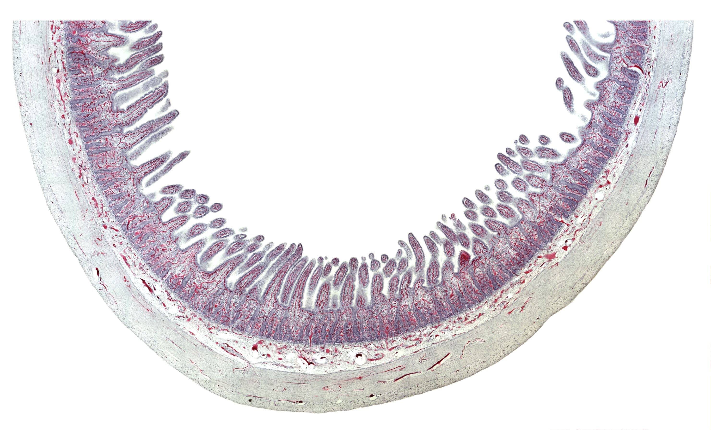
点击图片放大 · 本地概览
MHS 295 Ileum
回肠（MHS 295）
Dye Injection
本地概览
2960×1793
图像 © Histology Guide 及/或原始贡献者 · 非商业教育用途，经许可保存；原页面链接见下方
大肠
Large Intestine
- 黏膜无绒毛，大肠腺密集，杯状细胞特别多。
- 外纵肌局部增厚形成结肠带，是辨认结肠的重要标志。
- 结肠带牵拉黏膜形成结肠袋，外膜脂肪聚集形成肠脂垂。
- 阑尾管腔小，淋巴组织丰富，肠腺较短而稀疏。
低倍镜低倍镜下确认无绒毛的黏膜、密集肠腺与结肠带
高倍镜高倍镜下观察肠腺内杯状细胞的分布与固有层淋巴组织
易混提示：大肠黏膜斜切时腺体可呈岛状，勿误认为绒毛。
相关标本 · 5
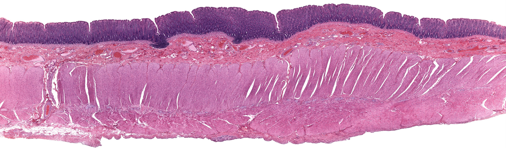
点击图片放大 · 本地概览
MH 123 Colon
结肠
H&E
本地概览
3744×1101
图像 © Histology Guide 及/或原始贡献者 · 非商业教育用途，经许可保存；原页面链接见下方
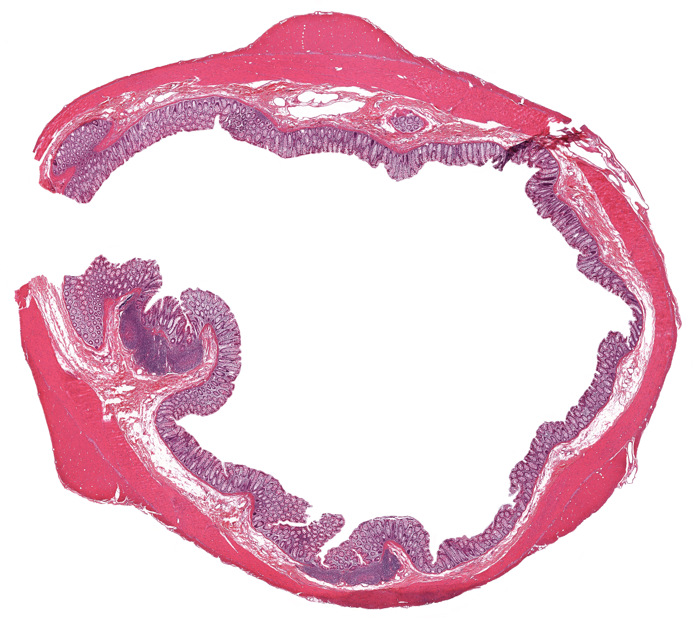
点击图片放大 · 本地概览
MHS 274 Colon
结肠（MHS 274）
H&E
本地概览
5176×4614
图像 © Histology Guide 及/或原始贡献者 · 非商业教育用途，经许可保存；原页面链接见下方
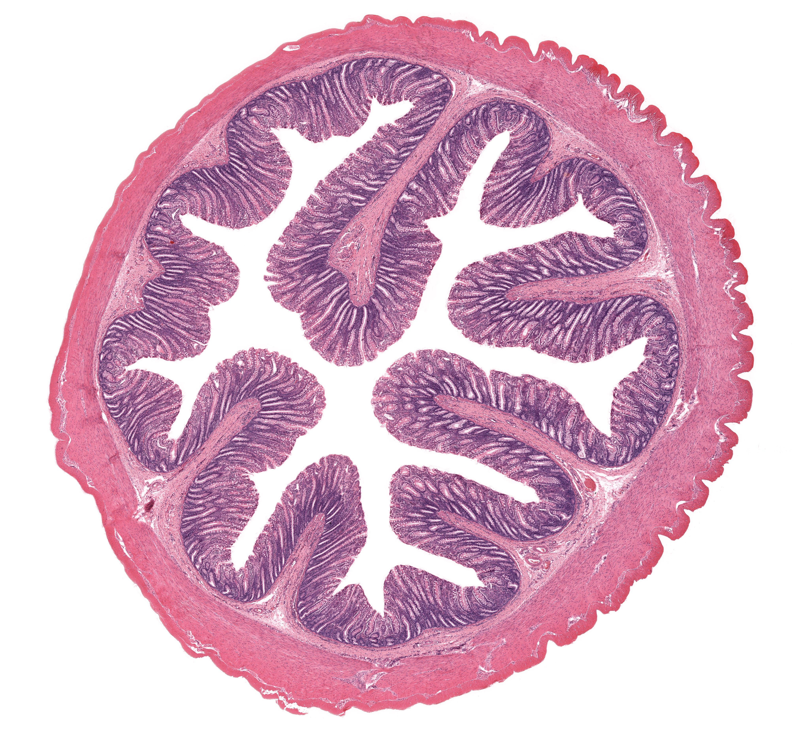
点击图片放大 · 本地概览
MHS 282 Colon
结肠（MHS 282）
本地概览
4007×3729
图像 © Histology Guide 及/或原始贡献者 · 非商业教育用途，经许可保存；原页面链接见下方
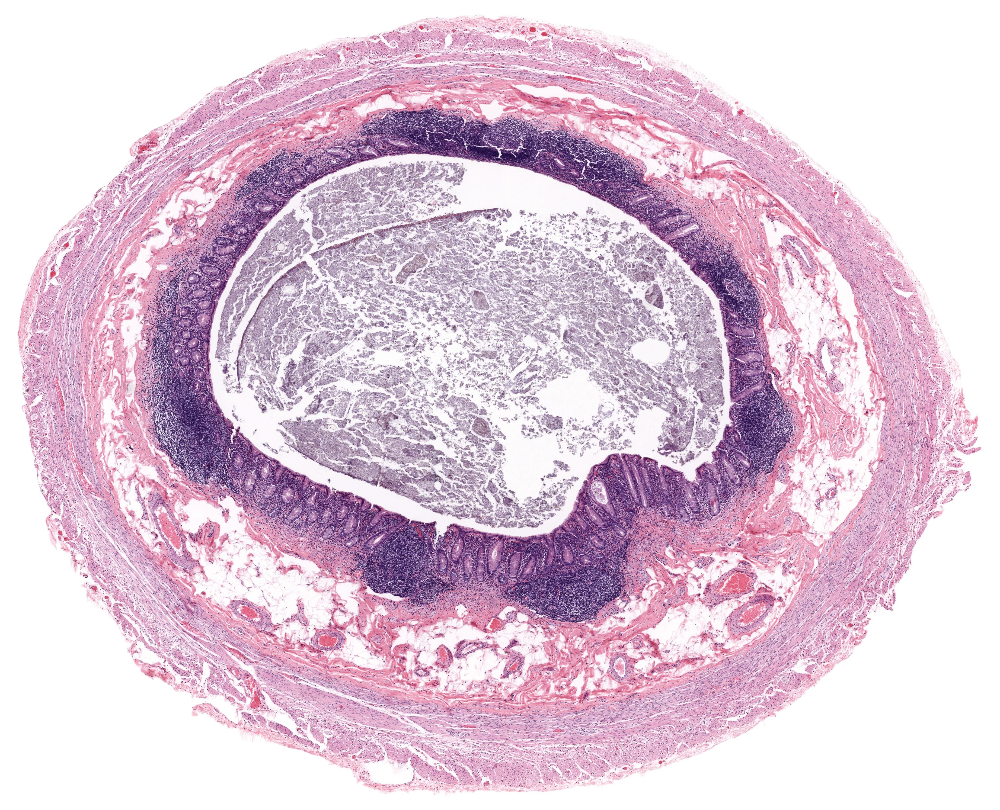
点击图片放大 · 本地概览
MH 122 Appendix
阑尾
H&E
本地概览
3687×2988
图像 © Histology Guide 及/或原始贡献者 · 非商业教育用途，经许可保存；原页面链接见下方
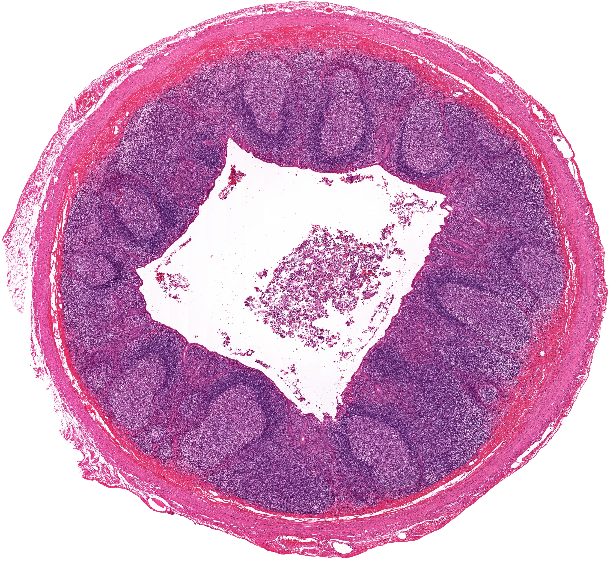
点击图片放大 · 本地概览
MHS 221 Appendix
阑尾（MHS 221）
H&E
本地概览
3884×3562
图像 © Histology Guide 及/或原始贡献者 · 非商业教育用途，经许可保存；原页面链接见下方
直肠
Rectum
- 黏膜有直肠横襞，上皮为单层柱状，含较多杯状细胞。
- 直肠下段黏膜下静脉丛扩张迂曲，可形成痔。
- 肛管上皮由单层柱状移行为复层扁平上皮，是重要的移行区。
低倍镜低倍镜下确认肠壁四层以及黏膜横襞的形态
高倍镜高倍镜下观察直肠肛管交界处上皮类型的改变
易混提示：直肠下段静脉丛扩张明显，易被误认为血管瘤样病变。
相关标本 · 2
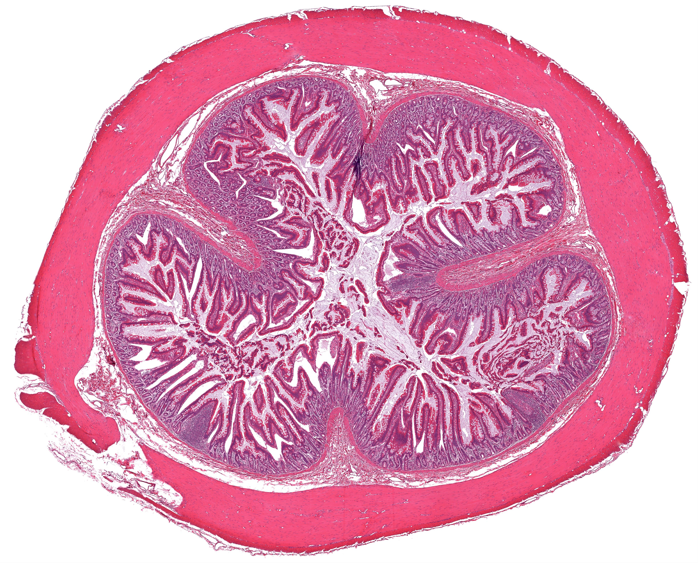
点击图片放大 · 本地概览
MHS 275 Rectum
直肠
H&E
本地概览
3911×3159
图像 © Histology Guide 及/或原始贡献者 · 非商业教育用途，经许可保存；原页面链接见下方
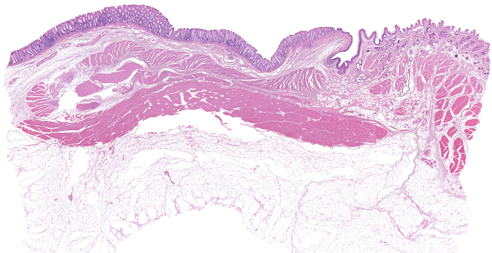
点击图片放大 · 本地概览
MHS 258 Recto-Anal Junction
直肠肛管交界
H&E
本地概览
3233×1668
图像 © Histology Guide 及/或原始贡献者 · 非商业教育用途，经许可保存；原页面链接见下方
本章其他图谱
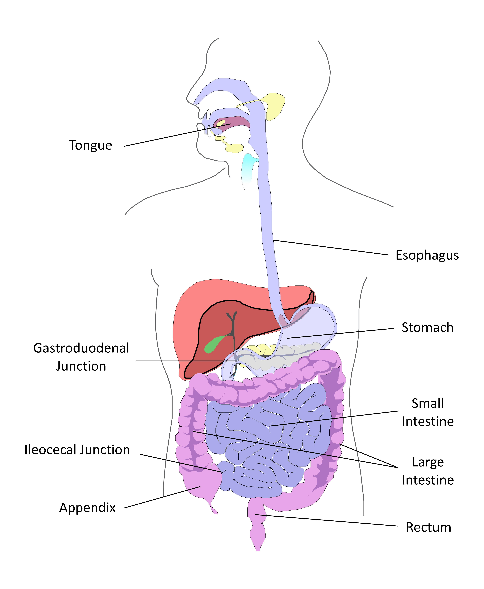
点击图片放大 · 本地概览
Fig 003 Gastrointestinal Tract
（中文名待编写）
本地概览
4096×4985
图像 © Histology Guide 及/或原始贡献者 · 非商业教育用途，经许可保存；原页面链接见下方
本章电镜照片
34 张 · 需在线查看
电镜照片 34 张（在线查看）
自测
10 题 · 自编
先自己回答，再点“显示答案”。标记为易错的项目会进入复习模式。
消化管管壁一般由哪四层构成？
概念
黏膜、黏膜下层、肌层和外膜
胃底腺中分泌盐酸和内因子的是哪种细胞？
识别
壁细胞
胃底腺主细胞分泌什么？
概念
胃蛋白酶原
小肠绒毛中轴的中央乳糜管属于什么管道？
概念
毛细淋巴管，负责吸收脂肪
十二指肠与空肠的主要形态区别是什么？
对比
十二指肠黏膜下层含十二指肠腺，空肠没有
结肠带是怎样形成的？
概念
外纵肌局部增厚形成，是辨认结肠的重要标志
食管胃交界处上皮发生了怎样的移行？
识别
由复层扁平上皮突然移行为单层柱状上皮
幽门括约肌由哪一层结构增厚形成？
概念
肌层的环形肌在幽门处增厚形成
舌的哪种乳头不含味蕾？
对比
丝状乳头，其上皮角化但不含味蕾
为什么大肠黏膜在切片上找不到绒毛？
概念
大肠黏膜表面平坦，只有密集的大肠腺而无绒毛